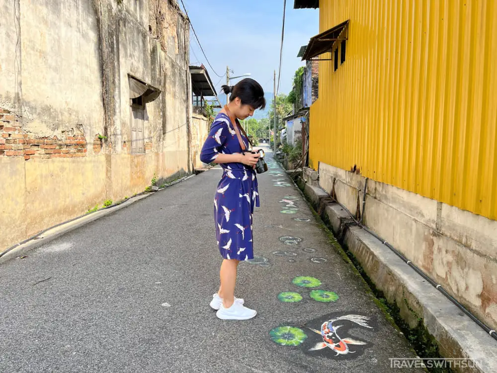
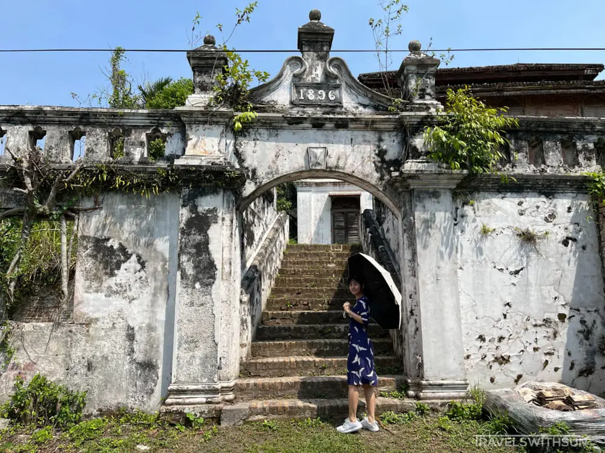

ACTIVITIES OF KAMPUNG PAPAN, PERAK
WALK BESIDE KOI & GOLDFISH
Beautiful paintings of koi and goldfish swimming in lily pads can be found on one side of the Papan Middle Alley stretch of road.
SEE AN OLD MASION

The Istana Raja Billah may not actually be a palace, despite its name strongly implying otherwise. For the residents of the region during that period, possessing that designation was very extraordinary. The elaborate carvings adorning the roof, windows, and doors of the mansion provide an appearance of grandeur. The mentioned building is inaccessible to both guests and tourists. There are individuals who assert that it is haunted.
CHAT WITH THE LOCALS

Commence by contacting the proprietors of the diminutive coffee establishments (of which there are merely two). They are delighted to provide insights about their upbringing in Papan during their childhood. Provided that you possess the ability to converse in Cantonese.
EXPLORE THE GALLERIES


Service is exclusively offered at 11 a.m. or 8:30 a.m. on Saturdays. Prior to the advent of electricity and plastic, the galleries offer an insight into the lifestyle of Papan Village. Furthermore, there exists an antiquated well and a plethora of historical furnishings. Photographs and information on Sybil Kathigasu are displayed on the walls at the entrance of a gallery in Papan Village. Engaging in the study of Sybil Kathigasu is a pursuit suitable for individuals with a Chinese educational background, which may be done for a considerable duration of time.